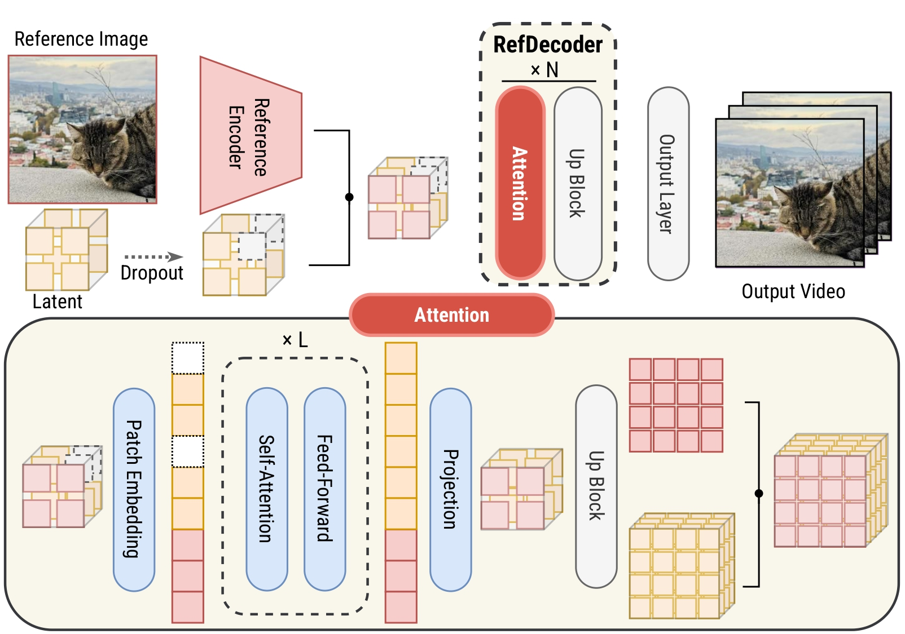
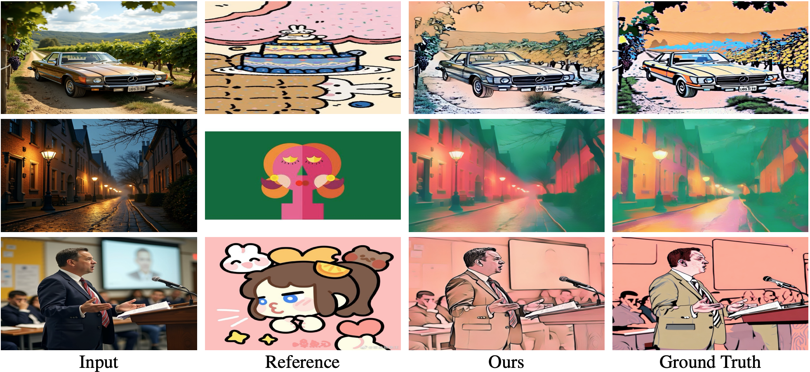
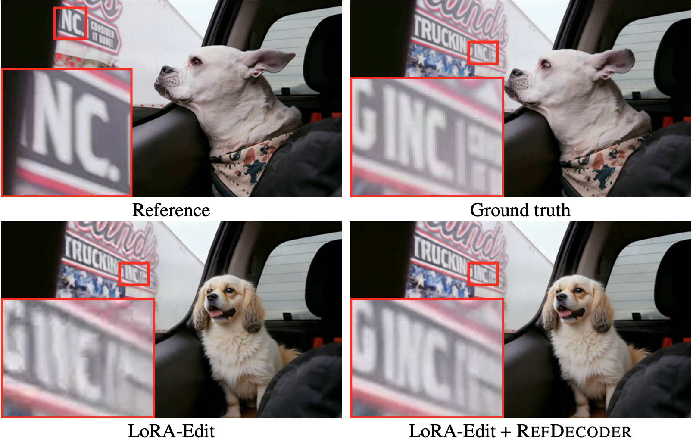

RefDecoder: Enhancing Visual Generation with Conditional Video Decoding
Xiang Fan, Yuheng Wang, Bohan Fang, Jason Ren, Ranjay Krishna
"TODO: prompt for slide 1..."
"TODO: prompt for slide 2..."
"TODO: prompt for slide 3..."
TL;DR

Did you know there's still a free lunch 🍲 in video generation? DiT models gobble up your beautiful image details 🌃 inside their compressed latent space and never give them back during decoding. With RefDecoder, we recover those details straight from your input image and hand them right back to you.
RefDecoder improves video decoding quality by up to 10% over even the best frontier open-source video generation models, including Wan and Hunyuan Video. Human evaluators prefer our outputs over vanilla decoding 80% of the time, with even larger gains in content-rich scenes such as urban streets, indoor venues, and sports action. As a plug-and-play module, RefDecoder drops into any video generation pipeline without re-training the heavy DiT transformer, and you can swap it in and out to compare against the original output. Beyond I2V, our reference-conditioning framework is versatile — the same framework extends to video editing, style transfer, and more, unlocking exciting new applications and efficiency gains that bypass the costly, time-consuming diffusion process.
Overview & Architecture

Detailed architecture of RefDecoder. The high-fidelity reference signal is injected via shared attention blocks to maintain spatial-temporal consistency.
The Innovation
RefDecoder improves video VAE decoders by conditioning on a high-fidelity reference signal that bypasses the lossy VAE latent round trip. It integrates seamlessly with existing pipelines like Wan 2.1 without requiring costly retraining of the diffusion model. The reference encoder extracts fine-grained spatial features which are injected into the upsampling layers of the decoder.
Key Advantage
Bypasses the bottleneck of low-dimensional latent spaces by providing a direct path for high-frequency details from the source reference image.
Visual Comparison

Video generation comparisons. For the same input reference, three frames generated at different timesteps are shown. The baseline distorts the underlying scene structure, whereas RefDecoder preserves the structure while producing sharper and more consistent details across frames.
Application: Style Transfer

Qualitative results on the style transfer task. The reconstructed images follow the reference style while preserving the structural content of the input images.
Application: Video Editing

Qualitative comparison on LoRA-Edit. Reference: first frame of the source video. The baseline decoder distorts non-edited regions, while RefDecoder regenerates them faithfully from the reference, preserving high-quality details such as the text.
Citation
TODO